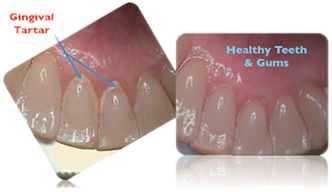
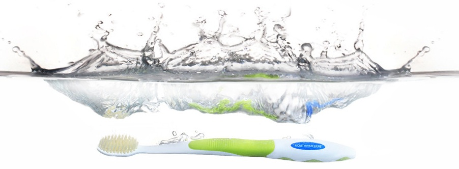

Eliminates 99.9% of bacteria that builds up on bristles in 6 hours due to our proprietary silver bristle technology.
Revolutionary Flossing Bristles™ - long, soft bristles with 1 micrometer diameter tips reach areas missed by other toothbrushes.
Our bristles reach deep into teeth grooves and the periodontal pockets (area between tooth and gum) for superior cleaning, while harder inner bristles ensure complete cleaning of the outer surfaces and massage the gums.
Comfort grip handle
High quality construction
PBT Bristle material outlasts traditional nylon used in competitive brushes
$4.99
Youth Superior Manual Toothbrush
Eliminates 99.9% of bacteria that builds up on bristles in 6 hours due to our proprietary silver bristle technology.
Revolutionary Flossing Bristles™ - long, soft bristles with 1 micrometer diameter tips reach areas missed by other toothbrushes.
Our bristles reach deep into teeth grooves and the periodontal pockets (area between tooth and gum) for superior cleaning, while harder inner bristles ensure complete cleaning of the outer surfaces and massage the gums.
Comfort grip handle
High quality construction
PBT Bristle material outlasts traditional nylon used in competitive brushes
$4.99
Superior Power Toothbrush
The revolutionary Flossing Bristles™ operate at 5,000 oscillations per minute with up and down motion.
Bed of thicker bristles for extra stability and power.
The advanced Flossing Bristles™ brush away cavity and gingivitis causing food and plaque build up by accessing:
The central fossa area of a tooth (the central region with ridges and grooves where 90% of cavities occur)
Periodontal pockets (between the gum and tooth)
$19.99
Antimicrobial
A Single Toothbrush is Home to Millions of Harmful Microorganisms
Bacteria thrive on a toothbrush after use. In a warm, moist environment of an average bathroom, bacteria on your toothbrush can double every 20 minutes resulting in as many as 100 million microorganisms on your toothbrush!
This bacteria can lead to illness, cavities and gum disease.
Mouth Watchers innovative antimicrobial bristles eliminate 99.9% of bacteria build up on the toothbrush bristles.
Using patented technology, silver suppresses a bacteria cell’s respiration and metabolism, thus inhibiting cell growth that normally causes infection, odor, illness, etc.
Silver Facts
Silver has been used for the treatment of medical ailments for over 100 years due to its natural antimicrobial and anti-fungal properties.
Ancient Greeks and Romans used silver to store water and other liquids to prevent spoilage.
Before and AFTER using Mouth Watchers (images from Dr. Plotka's patient)

Flossing Bristles™
Superior "Dual Action" Flossing Bristles™ Reach Plaque and Food that Other Brushes Miss
Revolutionary Flossing Bristles™ - long, soft dental floss bristles for cleaning between teeth and in hard to reach locations; thicker, harder inner bristles ensure complete cleaning.
Extra soft bristles are great for sensitive gums and braces!
Made from advanced PBT (polyester) plastics, these bristles outlast less expensive nylon bristles found on competitive toothbrushes.
Our patent pending Flossing Bristles™ are 10X thinner than bristles on ordinary toothbrushes and 1 micrometer (1/100th the diameter of human hair) at the tip!

Story
Mouth Watchers was founded by Dr. Ronald Plotka, a nationally renowned Boston area dentist with over 40 years of dentistry leadership. Operating a large practice in Swampscott, MA, Dr. Plotka has pioneered several oral healthcare advancements such as:
Dental Bonding
Tooth Sealants
Same-day Crown Fabrication
Dr. Plotka is a national lecturer and dental expert. He sits on several boards including, but not limited to:
Board of the Visiting Nurses Association
Executive Director of the Dental Program at Marian Court College
Board of Directors of Salem Five Bank
Staff Dentist at Salem Hospital Partners
Mouth Watchers is dedicated to making life healthier with unique dental hygiene products and services combining superior quality and the very latest technology.
“A Better Toothbrush for Better Health” Mouth Watchers was founded by Dr. Ronald Plotka, a renowned Boston area dentist. His 40 year passion for offering his patients the best oral care possible led him on a quest for a toothbrush that would truly benefit their health. A unique combination of antimicrobial and dual layered flossing bristles™ provides the patient with THE optimal brushing experience. The number one compliment we receive from consumers using our super toothbrush is: “it feels like I just had a professional dental cleaning”. This is high praise for a toothbrush.